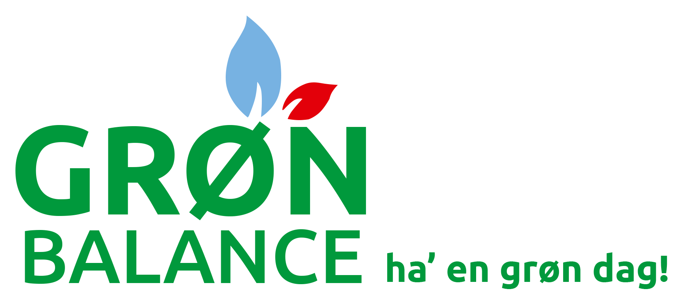

Hos Grøn Balance er det vigtigt for os at vores produkter er astma og allergivenlige, for at gøre vores del i kampen i at forebygge astma og allergi hos den danske befolkning.
Svanemærket er det nordisk miljømærke for produkter, der er mindst miljøbelastende som muligt- og sætter grænser for udledning af giftige stoffer og for indholdet af uønskede stoffer i varer.
Hos Grøn Balance, tror vi på at vi skal passe på vores planet og smukke danske natur, og vi gør derfor vores eget bedste for at mindske belast på miljøet med vores svanemærkede produktlinje.
Allantoin findes naturligt i roden fra lægeplanten Kulsukker, og virker lindrende mod ubehag på huden og fremmer den naturlige celledeling.
Allantoin er velegnet til tør, skadet og sensitiv hud, og er et miljøvenligt produkt som er nem at frembringe igennem Kulsukker planten.
Kulsukker er en slægt af blomster, som er ubredt i et område fra centralasien og Iran over Kaukasus og Lilleasien til Europa, kulsukker planten er blot en af 35 andre arter i sin plante familie, men den eneste med de hudplejende egenskaber.
Hos Grøn Balance anvender vi Allantoin for at sikre at din hud får den pleje som en fortjener. Allantoin er med til at sikre at din hud ikke bliver irriteret efter barbering, og fugt og bad.
Med Grøn Balance handler du med omtanke for dig selv, dine nærmeste og miljøet
Grøn Balance er en serie af de varer, som du bruger mest i hverdagen: Fødevarer, personlig pleje til hele familien samt vaske- og rengøringsmidler. Alle produkter i Grøn Balance serien er udvalgt med respekt og omhu – og udviklet til dig, der passer godt på dig selv og miljøet. Seriens fødevarer er alle økologiske og bærer enten det danske Ø-mærke eller det grønne europæiske mærke. Grøn Balance pleje-, vaske- og rengøringsprodukter går vi altid efter at mærke dem med det nordiske miljømærke Svanen og deklarere dem i samarbejde med Astma-Allergi Danmark.
Der kommer hele tiden nye produkter i serien, så du får stadig flere muligheder for at handle med omtanke for dig selv, dine nærmeste og miljøet.
Grøn Balance
Ha' en grøn dag!